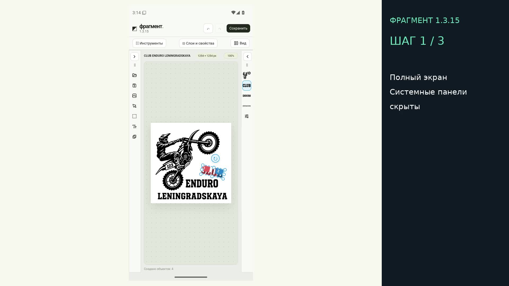

Открыть редакторФрагмент 1.3.15
Полноэкранный альбомный режим Android и отдельные сохранённые положения полной панели и полосы значков. Все изменения панелей из 1.3.14 включены.
- Поверните телефон горизонтально: системная строка и навигация скрываются. Свайп от края временно показывает системные панели. В портретном режиме они возвращаются.
- Передвиньте полную панель за заголовок. Сверните её, передвиньте полосу значков в другое место. Переключите состояния: у каждого своё положение. Перезапустите приложение и проверьте их сохранение.
- Прокрутите обе панели донизу; нажмите «Вид» несколько раз. Миниатюры без подписей «Объект…», стрелок и счётчиков страниц нет.
- Разделите «Ленинградская» на части: они идут слева направо. Остальные объекты и правки остаются.

21 секунда · Silero Ксения · поворот AndroidPixel 6 / Android 15 — проверка APK
Прогон прошёл: системные панели скрываются и возвращаются по ориентации; оба положения модуля проверены реальными касаниями. Правки и выбранный объект после поворота сохраняются. В браузере дополнительно проверено восстановление позиций обеих панелей после перезапуска.
Исходная запись Android · Технический отчёт · GitHub Actions
Видео содержит три фрагмента настоящей записи APK. Ожидание кадров эмулятора сокращено.
Размеры раскрытого экрана в браузере
Это проверка размеров окна, а не запись с физического Fold 7.